Sumo Robot
本節是介紹如何去組裝一隻相撲機械人。做好後效果如下:
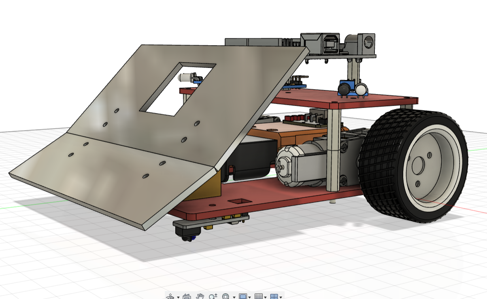
Sumo RobotStep 1: 準備工作/檔案Step 2: 建立小車底盤繪製底盤插入底盤零件Step 3: 繪製和組裝小車第二層板繪畫小車頂板插入Arduino UNO按入六角柱Step 4: 安裝sensor、電池為底盤開孔插入和安裝底盤sensor和電池架為頂板開孔和安裝sensorStep 5: 製作前擋板和鏟製作3D打印支架安裝三角支架到底板繪製鏟和前擋板為前擋板開孔，讓偵敵紅外線sensor能穿過為前擋板開孔Step 6: 微調功課
Step 1: 準備工作/檔案
下載本次所用到的零件zip檔
解壓縮
於Fusion左邊欄點擊
upload鍵將解壓後的檔案拖動到
Drag and Drop Here，或按Select Files找到路徑上傳

 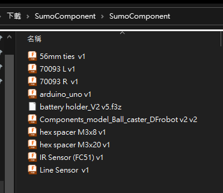
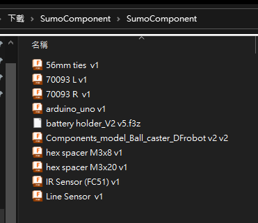
Step 2: 建立小車底盤
繪製底盤


開始一個新的設計
開一個new component
名字叫
bottom


確保小黑點在bottom這個component旁邊
開一個
new sketch下圖是我們底板的圖則
我會一步一步教你繪畫，熟練後就要靠自己了
先用快捷鍵
r，隨意繪劃一個長方形用快捷鍵
l，繪劃一條垂直中線在工具列上方找到
Coincident重合限制將中線釘在原點上
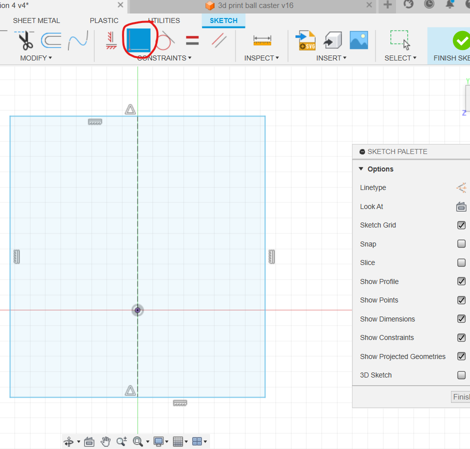
使用快捷鍵
s搜尋change parameters在右上方找到
User Parameter鍵在
Add User Parameter介面中，填寫以下資訊：Name: 變數名字，只能為英文字母，不能有空格Unit: 單位，例如mm、cm等，若無單位可忽略此欄位Expression: 設定的值，例如10、15等，也可以使用公式，例如10*2.54表示10英吋轉換成公分Comment: 注解，可以忽略
根據圖4的內容，開設
thickness、carLength、carWidth、gearBoxLength、gearBoxWidth、ballCastorLength6個參數


圖一：
將長方形的長和寬分別設為
carLength和carWidth長方形的底到原點距離返為
gearBoxLength確保所有草稿線都是黑色，表示完全定義
圖二：
由原點劃一條水平作圖線到長方形邊(用快捷鍵
x可以將實線變成作圖線)在作圖線隨意位置劃一個
center rectangle和兩個圓
圖三：
在剛才的
center rectangle，劃一條垂直中線用上方工具列的限制工具，選用
equal將兩個圓設成相等，用Symmetry 設定與中線對稱
設定與中線對稱標記相圖3的尺寸，最左手邊標記成
gearBoxWidth，方便之後調試參數
圖四:
用快捷鍵
s搜尋mirror，對圖3所劃內容鏡像到右手邊
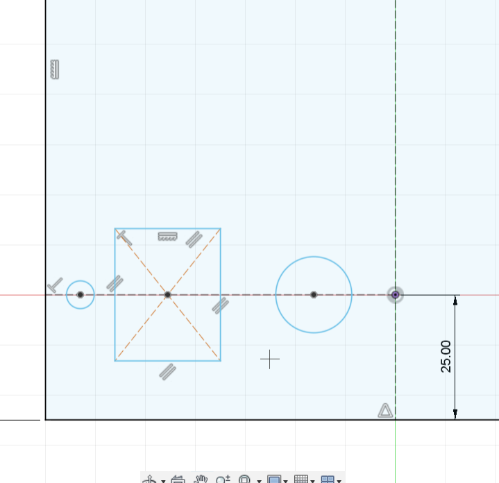
在圖的上方，緣中線繪劃以下圖形
記得善用限制工具
equal和Symmetry
完後後褪出2D草圖
用快捷鍵
e擠出thickness的厚度用快捷鍵
f將四個角修成3mm半徑的圓角，這樣實物切割出來時才不會割手
最後，在零件樹按滑鼠右鍵，選擇Ground，設定底板為Ground後，拖動底板就不會動，所有的joint都以底板為基礎

插入底盤零件
將小黑點退回最上層
在左手邊找到預備步驟時所上傳的零件
將零件之一的「牛眼輪」拖入當前的圖則畫面中
用快捷鍵
j，組合「牛眼輪」和底盤

拖曳零件中的
70093L至當前畫面點選左邊的零件樹中的
70093L並按下滑鼠右鍵選擇
剛體群組(Rigid Group)，這樣在拖曳齒輪箱時就不會整個散開最後用快捷鍵
j將齒輪箱和底板連接
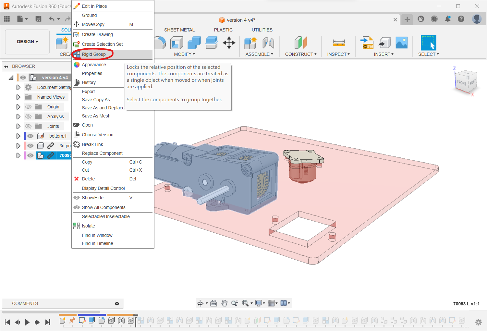
同樣地，將
70093R和tamiya 56mm sport tire拖動到當前畫面中用零件樹對著剛拖放入來的組件按滑鼠右鍵
用
Rigid Group將零件剛性組合最後用快捷鍵
j將它們組合到底板上tamiya 56mm sport tire組合時，要對著齒輪箱六角軸的中心，再偏移15mm在進行
joint時，去到motion頁面，選擇類型為revolving joint


Step 3: 繪製和組裝小車第二層板
繪畫小車頂板
將小黑點退回最外層
開一個新組件，用快捷鍵
s搜尋new component或按下上方工具列的圖示命名為
top
將小黑點放到新的
top元件旁邊點擊
offset plane按鈕或用快捷鍵
s搜尋offset plane
在小車的底板表面上，定一個偏移
40mm的平面工場只提供
20mm和8mm兩種六角柱子，如果需要其他高度，可以組合使用或使用 3D 列印墊高
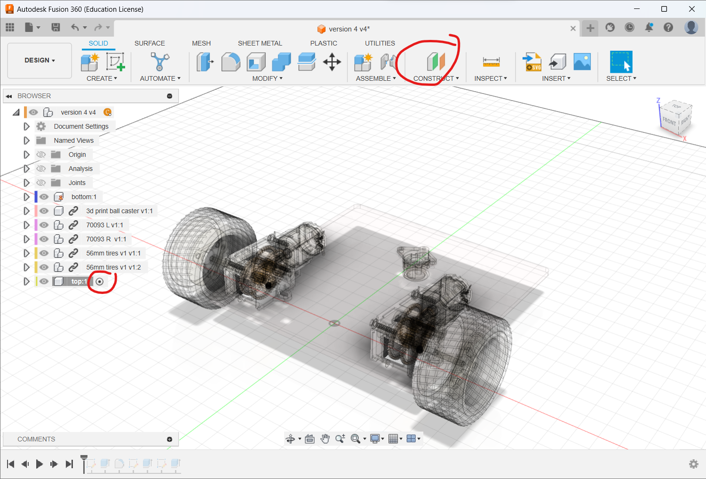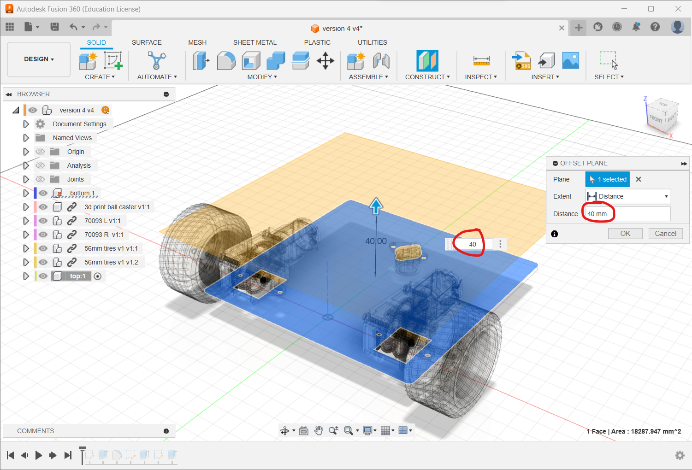
在新的
offset plane上點擊new sketch。使用快捷鍵
p或者搜尋project，將底板投影到這個面上
圖一：
在左側零件樹中，點擊眼睛圖示，隱藏除了
top以外的其他零件畫一條水平線，然後使用快捷鍵
d，將水平線與底線的距離設置為60mm
圖二：
選擇安裝齒輪箱的 4 個圖形和 2 個方形
使用快捷鍵
x將它們變成作圖線畫一個任意形狀的長方形
圖三：
將剛才畫的長方形使用快捷鍵
x變成作圖線用快捷鍵
d標示尺寸，每個邊距離外框5mm在四個角上畫上
3mm的圓使用限制工具
equal（等長)的工具，只需要標示一個圓，其他使用equal工具指定相等就可以
圖四：
使用快捷鍵
e將其擠出到設置的thickness厚度
圖五：
使用快捷鍵
f將頂板剩餘的兩個尖角修成3mm半徑的圓
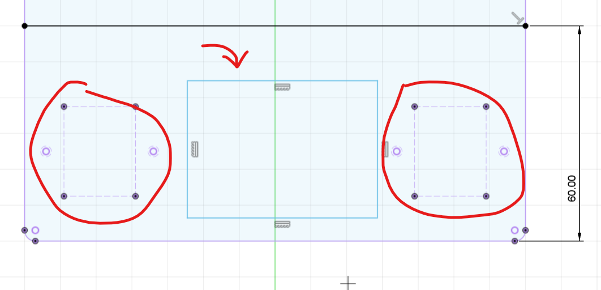
插入Arduino UNO
確認小黑點仍在
top的元件旁邊。在
top上面的平面上，開啟一個新的草圖用快捷鍵
s搜尋change parameter，設定兩個新的參數，分別為unoX和unoY，用來設定Arduino UNO板的相對位置

圖一為Arduino UNO板孔距的尺寸
由於頂板上的零件距離 Arduino UNO 的第四個孔太近，因此不需要開孔
UNO的設計單位是英吋，所以轉成毫米並非整數
圖二：根據圖一中 Arduino UNO 板的尺寸，在頂板上畫上三個直徑為
3mm的圓使用限制工具
equal（等長)的工具，只需要標示一個圓，其他使用equal工具指定相等就可以輸入
unoX和unoY參數，設定Arduino UNO板距離頂板的左側和底側尺寸
圖三：使用快捷鍵
e，將剛才畫的三個圓從頂板上減去


在零件樹中找到
top零件，點擊三角形圖示打開零件樹，將隱藏了的sketch4顯示選擇草圖上的四個直徑為
3mm的圓，使用快捷鍵e，將它們貫穿到底板上，為底板開四個孔
將
Arduino UNO板從庫存中拖入當前畫面在零件樹中找到
Arduino UNO零件，按下滑鼠右鍵，並選擇Rigid Group使用快捷鍵
j將Arduino UNO板固定在頂板上，並將其偏移20mm


按入六角柱
圖一：
將小黑點移動到最上層
使用快捷鍵
s搜索new component，開啟一個名為double hex的新元件
圖二：
確保小黑點在剛才新開的
double hex元件旁庫存中拖入
hex spacer M3x20，並使用ctrl+c/ctrl+v複製一份
圖三：
使用快捷鍵
j將兩個六角柱組合在一起


joint設定完成後，將小黑點移回最上層複製
double hex元件三份使用快捷鍵
J，將這四個元件組合到小車底盤上

圖一：
確保小黑點在最上層
打開其中一個
double hex元件，選擇其中一個hex spacer M3X20
圖二：使用
ctrl+c/ctrl+v複製三份圖三：使用快捷鍵
j，將這三個六角柱組裝到 Arduino UNO 板上
組裝完成後，請確認所有零件已經固定，不會移動，可輕輕拖動零件確認
Step 4: 安裝sensor、電池
為底盤開孔
接下來，我們會為小車安裝電池組和邊緣傳感器
使用快捷鍵
s搜尋change parameter，新增三個參數sensorX、sensorY和batteryY，分別用來指定邊緣傳感器和電池組的位置
將小黑點放到
bottom旁邊在小車底盤表面開啟一個新的草圖
對
bottom外的組件隱藏
繪製對地面的邊緣感測器安裝孔
安裝孔共有2個
下方安裝孔距離底板頂部和底板邊緣分別為參數
sensorX和sensorY上方安裝孔距離下方
11mm
在兩個安裝孔圓心劃一條作圖線，在中點劃一個
center rectangle，尺寸為11 x 5.5mm需要加一個
center rectangle方便調整電阻值，因此劃一個8x8mm的方形，距離下方安裝孔8mm最後為了走線，需要加一個
center rectangle和一個圓孔。
在底板繪製一條中線
將剛才第二步所繪製的圖形鏡像到另一邊
在中線上，使用快捷鍵
s搜尋指令center rectangle劃一個長方形在隨意位置劃一條水平線，使用幾何限制
Midpoint 指定水平線到長方形的中心點(圖一紅圈)
指定水平線到長方形的中心點(圖一紅圈)在水平線兩端劃兩個直徑為
3mm的圓使用幾何限制
equal（等長)工具，只需要標示一個圓即可
將長方形的底部和底板的底邊距離標注為參數
batteryY(圖一紅圈)最後將剛才所劃的圖形，使用快捷鍵
e從底板中減去(圖二)
插入和安裝底盤sensor和電池架
將小黑點褪回最上層
在零件庫中拖曳兩個邊緣感測器
Line Sensor和電池組Battery Shell
使用快捷鍵
J，將邊緣感測器組合到底盤下方安裝好兩個邊緣感測器後，可以安裝電池架
全部組合完成後，可以在左邊的零件樹按下「眼睛」圖示，將全部零件顯示
下圖是安裝好的效果
為頂板開孔和安裝sensor
接下來，安裝尋找敵人的紅外線傳感器
用快捷鍵
s搜尋change parameter，新增兩個參數IRSensorX和IRSensorY，用來指定紅外線傳感器的位置

圖一：
小黑點移動到零件
top旁邊在頂板的表面，使用
create new sketch創建一個新的草圖隱藏頂板上的 Arduino UNO 板和三條六角柱，以方便操作
圖二：
在頂板上劃一條中線，使用快捷鍵
x將其轉換成作圖線隨意繪製一個直徑為
3mm的圓將其與頂板左側和底部的距離分別設置為
IRSensorX和IRSensorY使用指令
mirror鏡像到另一側在中線上繪製一個圓，使用幾何限制
Horizontal/Vertical將其與另外兩個圓對齊，使用Equal指令使三個圓的尺寸相同最後將這三個圓用快捷鍵
e從頂板中減去
圖一、二：
將小黑點移動到最上層
隱藏頂板
top以外的零件，以方便操作從零件庫中拖曳三個
IR Sensor (FC51)到畫面中
圖三：
使用快捷鍵
J，將三個IR Sensor (FC51)感測器組合到頂板左右兩側的感測器應該向左右45度指向
記得將感測器向上偏移
3mm，實際安裝時，需要使用3mm的墊圈將感測器抬高，以避免壓彎電線腳

Step 5: 製作前擋板和鏟
來到這一步，機械人已基本完成，有基本的功能，接下來最後一步要製作前方的檔板和鏟，第一個步驟是要先製作用以安裝前方檔板的支架。
製作3D打印支架
將小黑點移動到最上層
使用快捷鍵
s搜尋new component，新建一個名為triangle的元件將
triangle和bottom以外的零件隱藏確認小黑點在新建的元件旁邊，然後在
YZ平面上新建一個草圖
使用快捷鍵
p投影底板的頂端按照圖二的尺寸設計三角形支架
用快捷鍵
e擠出Direction選擇SymmetricMeasurement選擇兩邊的總長度擠出厚度為
10mm
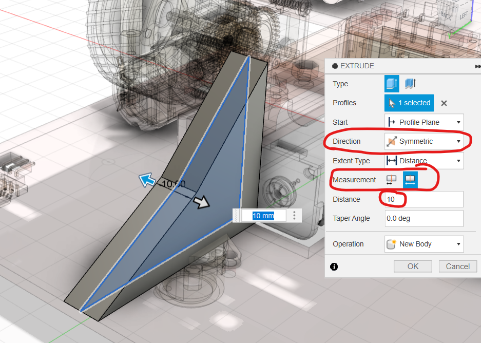
確認小黑點在
triangle旁邊隱藏除了
triangle以外的其他元件點選30度的斜面，使用快捷鍵
s搜尋new sketch開一個新的草圖劃一條中線，然後繪製兩個直徑為
3mm的圓，尺寸參考圖二使用快捷鍵
e，減去深度為10mm
重複上述步驟，在45度的斜面上開啟新的草圖
畫出兩條中線，在表面上繪製兩個直徑為
3mm的圓，尺寸參考圖一使用快捷鍵
e，向下減去深度為10mm
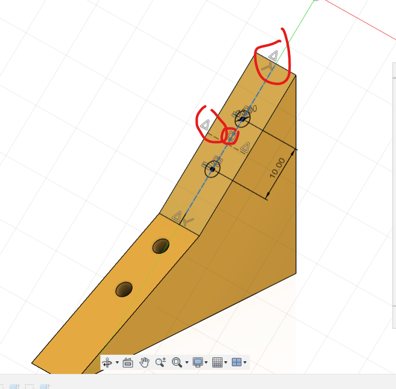
這個三角架要安裝在底板上，因此底部需要開孔
在
triangle底部開啟一個新的草圖畫出一條中線，在底部繪製兩個直徑為
3mm的圓由圖三可見，由於另外兩個面已經有螺絲孔，因此底部的圓需要向後移動一點，以免與其他穿孔相撞

安裝三角支架到底板
在零件樹中找到
bottom底板，點擊「眼睛」圖示，重新顯示把小黑點移動到
bottom旁邊在底板表面上開啟一個新的草圖
用快捷鍵
s搜尋change parameter新增兩個參數
triangleX和triangleY，用來設定三角支架的位置
在底板的草圖上劃一條中線
畫兩條任意的水平線
指定水平線高度為
triangleY和10mm
在這兩條水平線上畫兩個圓
指定其中一個直徑為
3mm使用幾何限制工具
equal使兩個圓相等使用幾何限制工具
Horizontal/Vertical將其與另一個圓垂直對齊用
mirror指令將這兩個圓鏡像到另一側
最後使用快捷鍵
e，從底板上減去這四個圓
將小黑點退回最上層
用
ctrl+c/ctrl+v複製triangle一份使用快捷鍵
j，將其分別組合到底板上
繪製鏟和前擋板
確保小黑點移回最上層
開啟一個新元件，並命名為
front plane在三角形支架的30度斜面（左邊或右邊都可以）開啟一個新的草圖
使用快捷鍵
p，投影兩側的三角支架穿過原點畫出一條中心線，在這個面上繪製一個長方形，使其頂部通過30度斜面的頂部
然後使用快捷鍵
e，擠出厚度為thickness

圖一：在45度斜面上開啟一個新的草圖
圖二：投影兩側的45度斜面和前方鏟板的頂部邊緣到這個草圖中
圖三：
繪製一個長方形，一邊為剛才的投影線，寬為
70mm再使用
e快捷鍵擠出厚度為thickness
圖四：
將視角轉到側視圖，觀察並確保兩塊板並沒有重疊相撞
之後可以使用快捷鍵
j將鏟和擋板組合到三角支架上因為鏟和擋板都是同一個元件的兩個實體，所以在拖動時這兩塊板會一起拖動，這是正常的
我沒有示範組裝過程的截圖，請您自行完成
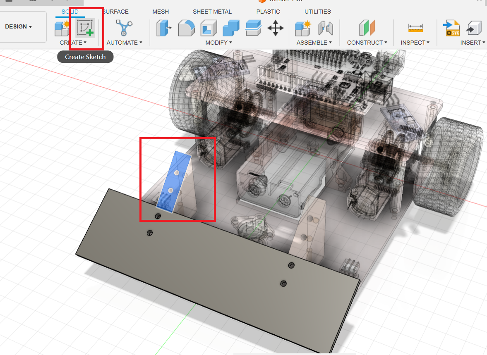


為前擋板開孔，讓偵敵紅外線sensor能穿過
圖一：
確認小黑點在
front plane旁邊打開零件樹的箭頭，將前檔板隱藏
圖二：
選擇指向前方的紅外線傳感器的平面，並在上面開啟一個新的草圖
在紅外線傳感器的LED和接收器的兩個圓的中心之間，繪製一個直徑
15mm圓形
 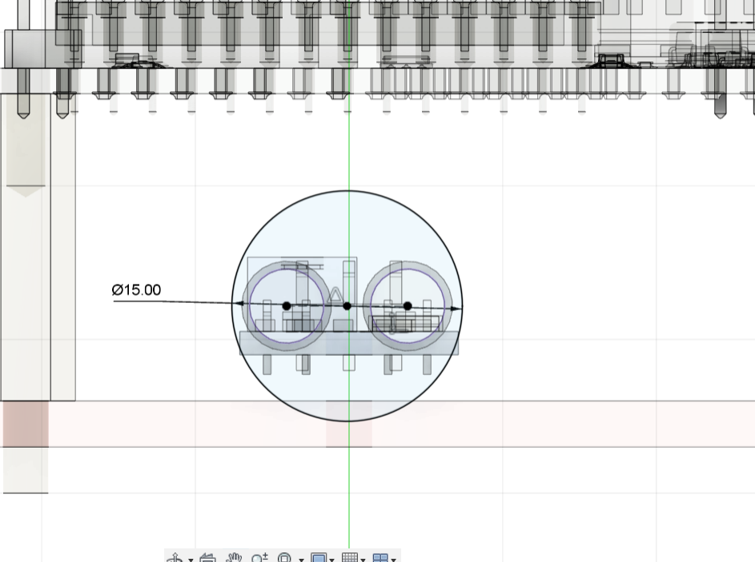
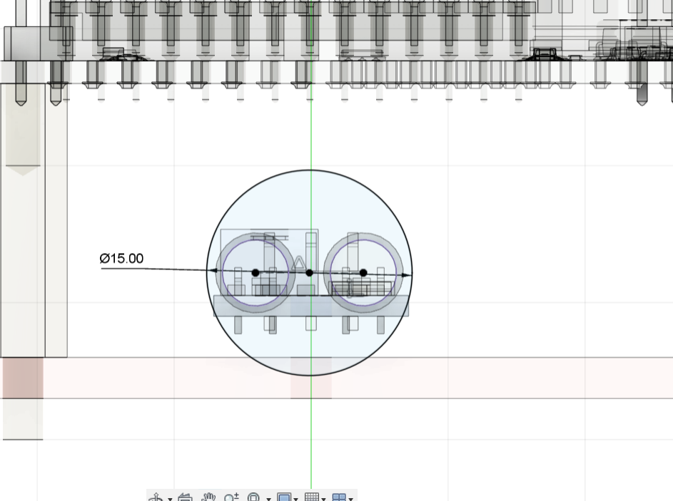
使用快捷鍵
e擠出工具，將這個圓形擠出一個新的實體，距離可以隨意設定，只要比底盤長即可擠出時，在工具列的
taper angle選擇5 deg使得擠出的面積越來越大
錐度角的設定應該要根據你所使用的傳感器的發散角度來決定
我使用的是5度的錐度角，這是基於我過去的經驗設定的
圖一：
繼續確保小黑點在
front plane旁邊將前擋板顯示出來（
front plane-->body5）在前擋板表面開啟一個新的草圖
圖二、三：
使用快捷鍵
s搜索intersect命令這個命令用於獲取所選實體與當前平面的相交線
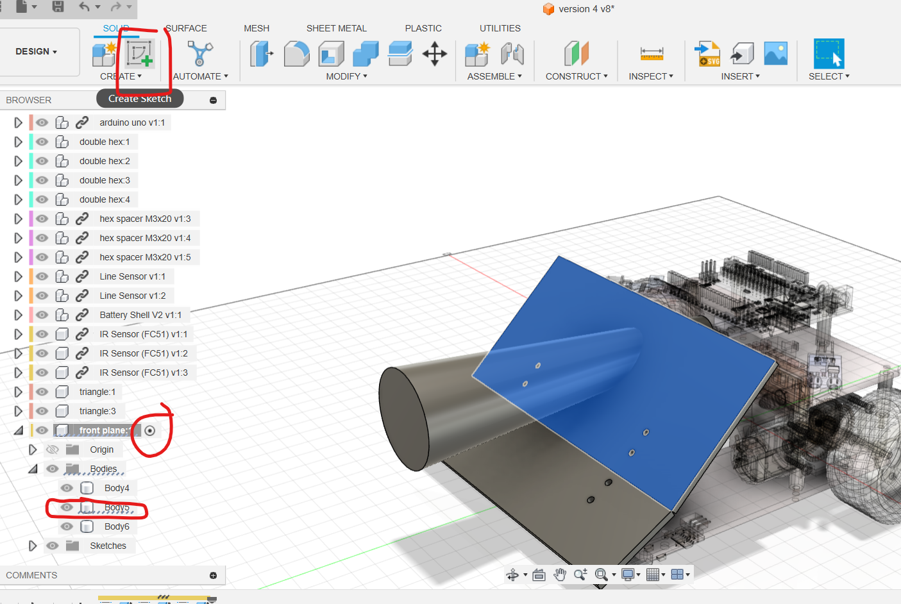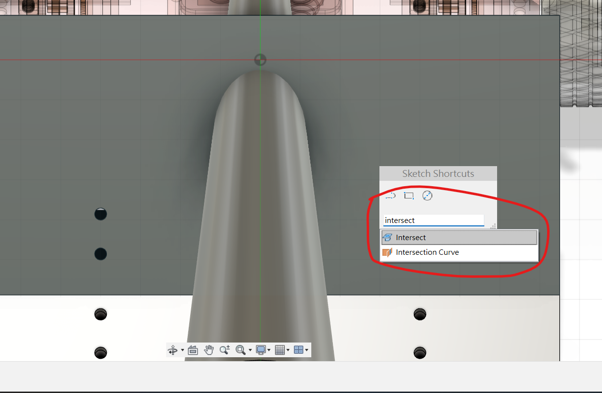
為前擋板開孔
根據這個橢圓形的中心點，我們可以知道傳感器射出的紅外線會落在前擋板的哪個位置
在相對的位置開槽，才不會阻礙紅外線的發射和接收
以橢圖圖心，繪劃一個
35x35mm的正方形使用快捷鍵
e擠出工具將其減去，完成開槽
- 拖動每個零件，以確定它們正確地組裝在一起
- 使用Fusion 360的
interference指令，可以自動計算模型是否有干擾（即相撞）的問題
Step 6: 微調功課
請確保將小黑點移回最上層
使用快捷鍵
s搜尋Section Analysis指令選擇世界座標系下的YZ平面（或您的機械人的側面平面）
使用截面工具將機械人切成兩半，以方便觀察
這個模型存在以下問題：
30度的擋板需要增長，以便更好地發揮鏟的效果。此外，需要添加一層薄金屬或膠片令其更貼地
對地的邊緣傳感器（
Line Sensor）需要更靠前，以便更早地檢測到前方是否為場外，並停車三角支架需要移後，或將小車的長度縮減，如果不移後，30度的鏟加長後，整車就會超過200mm，會犯規不能作賽
對敵紅外線傳感器需要往前移
這樣前擋板就不需要開那麼大的槽
而且能紅外線傳感器的檢測距離有限，越前越能提早感測到敵人
可以用快捷鍵
s搜尋change parameter，上述所提到需要修改的尺寸，事前都已設定成參數，只要修改參數，相關的零件位置就會改變。輸出生產前，使用Fusion 360的
interference指令，計算模型是否有干擾（即相撞）的問題